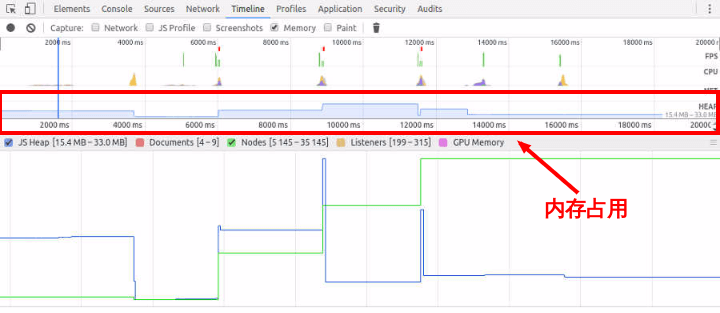

<!DOCTYPE html>
<html>
<head><meta name="generator" content="Hexo 3.8.0">
  <meta charset="utf-8">
  
  <title>JavaScript内存泄漏 | LIUXUEWEN&#39;S BLOG</title>
  <meta name="viewport" content="width=device-width, initial-scale=1, maximum-scale=1">
  
    <meta name="keywords" content="LIUXUEWEN,LIUXUEWEN's Blog">
  
  <meta name="description" content="一、内存泄露  程序申请内存后，无法释放已申请的内存空间（内存泄露）   程序申请内存时，没有足够的内存空间供其使用（内存溢出） 二、JavaScript 内存管理  JavaScript 是一种垃圾回收语言。垃圾回收语言通过周期性地检查先前分配的内存是否可达，帮助开发者管理内存。 三、JavaScript 内存泄露  垃圾回收语言的内存泄露主因是不需要的引用。 四、常见的 JS 内存泄露  1、">
<meta name="keywords" content="前端-JS">
<meta property="og:type" content="article">
<meta property="og:title" content="JavaScript内存泄漏">
<meta property="og:url" content="http://liuxuewen-site.github.io/2018/03/10/JS-bs-memoryLeak/index.html">
<meta property="og:site_name" content="LIUXUEWEN&#39;S BLOG">
<meta property="og:description" content="一、内存泄露  程序申请内存后，无法释放已申请的内存空间（内存泄露）   程序申请内存时，没有足够的内存空间供其使用（内存溢出） 二、JavaScript 内存管理  JavaScript 是一种垃圾回收语言。垃圾回收语言通过周期性地检查先前分配的内存是否可达，帮助开发者管理内存。 三、JavaScript 内存泄露  垃圾回收语言的内存泄露主因是不需要的引用。 四、常见的 JS 内存泄露  1、">
<meta property="og:locale" content="default">
<meta property="og:image" content="http://liuxuewen-site.github.io/2018/03/10/JS-bs-memoryLeak/1.png">
<meta property="og:image" content="http://liuxuewen-site.github.io/2018/03/10/JS-bs-memoryLeak/2.png">
<meta property="og:image" content="http://liuxuewen-site.github.io/2018/03/10/JS-bs-memoryLeak/3.png">
<meta property="og:updated_time" content="2019-02-02T06:42:53.950Z">
<meta name="twitter:card" content="summary">
<meta name="twitter:title" content="JavaScript内存泄漏">
<meta name="twitter:description" content="一、内存泄露  程序申请内存后，无法释放已申请的内存空间（内存泄露）   程序申请内存时，没有足够的内存空间供其使用（内存溢出） 二、JavaScript 内存管理  JavaScript 是一种垃圾回收语言。垃圾回收语言通过周期性地检查先前分配的内存是否可达，帮助开发者管理内存。 三、JavaScript 内存泄露  垃圾回收语言的内存泄露主因是不需要的引用。 四、常见的 JS 内存泄露  1、">
<meta name="twitter:image" content="http://liuxuewen-site.github.io/2018/03/10/JS-bs-memoryLeak/1.png">
  
  
    <link rel="icon" href="/favicon.ico">
  
  <link href="//cdn.bootcss.com/font-awesome/4.7.0/css/font-awesome.min.css" rel="stylesheet" type="text/css">
  <link rel="stylesheet" href="/css/style.css">
  <script src="/js/pace.min.js"></script>
  

  
  

</head>
</html>
<body>
  <div id="container">
      <header id="header">
    <div id="banner"></div>
    <div id="header-outer">
        <div id="header-menu" class="header-menu-pos animated">
            <div class="header-menu-container">
                <a href="/" class="left">
                    <span class="site-title">I AM LIUXUEWEN</span>
                </a>
                <nav id="header-menu-nav" class="right">
                    
                    <a href="/">
                        <i class="fa fa-home"></i>
                        <span>Home</span>
                    </a>
                    
                    <a href="/archives">
                        <i class="fa fa-archive"></i>
                        <span>Archives</span>
                    </a>
                    
                    <a href="/about">
                        <i class="fa fa-user"></i>
                        <span>About</span>
                    </a>
                    
                </nav>
                <a class="mobile-header-menu-button">
                    <i class="fa fa-bars"></i>
                </a>
            </div>
        </div>
        <div id="header-row">
            <div id="logo">
                <a href="/">
                    
                </a>
            </div>
            <div class="header-info">
                <div id="header-title">
                    
                    <h2>
                        I AM LIUXUEWEN
                    </h2>
                    
                </div>
                <div id="header-description">
                    
                    <h3>
                        一个 宅不住 的 IT程序员
                    </h3>
                    
                </div>
            </div>
            <nav class="header-nav">
                <div class="social">
                    
                        <a title="Github" target="_blank" href="//github.com/liuxuewen-site">
                            <i class="fa fa-github fa-2x"></i></a>
                    
                        <a title="Weibo" "="">
                            <i class="fa fa-weibo fa-2x"></i></a>
                    
                        <a title="Weixin" "="">
                            <i class="fa fa-weixin fa-2x"></i></a>
                    
                </div>
            </nav>
        </div>
    </div>
</header>
      <div class="outer">
        <section id="main" class="body-wrap"><article id="post-JS-bs-memoryLeak" class="article article-type-post" itemscope="" itemprop="blogPost">
  <div class="article-inner">
    
      <header class="article-header">
        
  
    <h1 class="post-title" itemprop="name">
      JavaScript内存泄漏
    </h1>
    <div class="post-title-bar">
      <ul>
          
              <li>
                  <i class="fa fa-book"></i>
                  
                      <a href="/categories/前端/">前端</a>
                  
              </li>
          
        <li>
          <i class="fa fa-calendar"></i>  2018-03-10
        </li>
        <li>
          <i class="fa fa-eye"></i>
          <span id="busuanzi_value_page_pv"></span>
        </li>
      </ul>
    </div>
  

          
      </header>
    
    <div class="article-entry post-content" itemprop="articleBody">
      
            
            <h3 id="一、内存泄露"><a href="#一、内存泄露" class="headerlink" title="一、内存泄露"></a>一、内存泄露</h3><p>  程序申请内存后，无法释放已申请的内存空间（内存泄露）</p>
<p>  程序申请内存时，没有足够的内存空间供其使用（内存溢出）</p>
<h3 id="二、JavaScript-内存管理"><a href="#二、JavaScript-内存管理" class="headerlink" title="二、JavaScript 内存管理"></a>二、JavaScript 内存管理</h3><p>  JavaScript 是一种垃圾回收语言。垃圾回收语言通过周期性地检查先前分配的内存是否可达，帮助开发者管理内存。</p>
<h3 id="三、JavaScript-内存泄露"><a href="#三、JavaScript-内存泄露" class="headerlink" title="三、JavaScript 内存泄露"></a>三、JavaScript 内存泄露</h3><p>  垃圾回收语言的内存泄露主因是不需要的引用。</p>
<h3 id="四、常见的-JS-内存泄露"><a href="#四、常见的-JS-内存泄露" class="headerlink" title="四、常见的 JS 内存泄露"></a>四、常见的 JS 内存泄露</h3>  <font size="4" face="黑体"><strong>1、意外的全局变量：</strong></font>

<p>  JavaScript 处理未定义变量的方式比较宽松：未定义的变量会在全局对象创建一个新变量，在浏览器中，全局对象是 window。</p>
<p>  例子1：<br>  <figure class="highlight bash"><table><tr><td class="gutter"><pre><span class="line">1</span><br><span class="line">2</span><br><span class="line">3</span><br><span class="line">4</span><br><span class="line">5</span><br><span class="line">6</span><br><span class="line">7</span><br><span class="line">8</span><br></pre></td><td class="code"><pre><span class="line"><span class="keyword">function</span> foo(arg) &#123; </span><br><span class="line">    bar = <span class="string">"this is a hidden global variable"</span>; </span><br><span class="line">&#125; </span><br><span class="line"></span><br><span class="line">// 实际上是：</span><br><span class="line"><span class="keyword">function</span> foo(arg) &#123; </span><br><span class="line">    window.bar = <span class="string">"this is an explicit global variable"</span>; </span><br><span class="line">&#125;</span><br></pre></td></tr></table></figure></p>
<p>  函数 foo 内部忘记使用 var，意外创建了一个全局变量，此例泄露了一个简单的字符串。</p>
<p>  例子2：<br>  <figure class="highlight bash"><table><tr><td class="gutter"><pre><span class="line">1</span><br><span class="line">2</span><br><span class="line">3</span><br><span class="line">4</span><br></pre></td><td class="code"><pre><span class="line"><span class="keyword">function</span> <span class="function"><span class="title">foo</span></span>() &#123; </span><br><span class="line">    this.variable = <span class="string">"potential accidental global"</span>; </span><br><span class="line">&#125;  </span><br><span class="line">foo();</span><br></pre></td></tr></table></figure></p>
<p>  另一种意外的全局变量可能由 this 创建，this 指向了全局对象（window），而不是 undefined。在 JavaScript 文件头部加上 ‘use strict’，启用严格模式解析 JavaScript，可以避免此类错误发生。</p>
  <font size="4" face="黑体"><strong>2、被遗忘的计时器或回调函数：</strong></font>

  <figure class="highlight bash"><table><tr><td class="gutter"><pre><span class="line">1</span><br><span class="line">2</span><br><span class="line">3</span><br><span class="line">4</span><br><span class="line">5</span><br><span class="line">6</span><br></pre></td><td class="code"><pre><span class="line">setInterval(<span class="function"><span class="title">function</span></span>() &#123; </span><br><span class="line">    var node = document.getElementById(<span class="string">'Node'</span>); </span><br><span class="line">    <span class="keyword">if</span>(node) &#123; </span><br><span class="line">        node.innerHTML = JSON.stringify(someResource)); </span><br><span class="line">    &#125; </span><br><span class="line">&#125;, 1000);</span><br></pre></td></tr></table></figure>
<p>  与节点或数据关联的计时器不再需要时，node 对象可以删除，整个回调函数也不需要了，可是计时器回调函数仍然没被回收（计时器停止才会被回收）。同时 someResource 如果存储了大量的数据，也是无法被回收的。</p>
  <font size="4" face="黑体"><strong>3、脱离 DOM 的引用：</strong></font>

<p>  假如 JavaScript 代码中保存了表格某一个 &lt; td &gt; 的引用，将来决定删除整个表格的时候，由于此 &lt; td &gt; 是表格的子节点，子元素与父元素是引用关系，代码保留了 &lt; td &gt; 的引用，导致整个表格仍待在内存中。</p>
  <font size="4" face="黑体"><strong>4、闭包：</strong></font>

  <figure class="highlight plain"><table><tr><td class="gutter"><pre><span class="line">1</span><br><span class="line">2</span><br><span class="line">3</span><br><span class="line">4</span><br><span class="line">5</span><br><span class="line">6</span><br><span class="line">7</span><br><span class="line">8</span><br><span class="line">9</span><br><span class="line">10</span><br><span class="line">11</span><br><span class="line">12</span><br><span class="line">13</span><br><span class="line">14</span><br><span class="line">15</span><br><span class="line">16</span><br></pre></td><td class="code"><pre><span class="line">var theThing = null; </span><br><span class="line">var replaceThing = function () &#123; </span><br><span class="line">    var originalThing = theThing; </span><br><span class="line">    theThing = &#123; </span><br><span class="line">        longStr: new Array(1000000).join(&apos;*&apos;), </span><br><span class="line">        someMethod: function () &#123; </span><br><span class="line">            console.log(&quot;hello&quot;); </span><br><span class="line">        &#125; </span><br><span class="line">    &#125;; </span><br><span class="line"></span><br><span class="line">    var unused = function () &#123; </span><br><span class="line">        if (originalThing) </span><br><span class="line">            console.log(&quot;hi&quot;); </span><br><span class="line">    &#125;;</span><br><span class="line">&#125;; </span><br><span class="line">setInterval(replaceThing, 1000);</span><br></pre></td></tr></table></figure>
<p>  每次调用 replaceThing，theThing 得到一个包含一个大数组（longStr）和一个新对象（someMethod）。同时，变量 unused 是一个引用 originalThing 的闭包（originalThing = theThing），尽管 unused 从未使用，它引用的 originalThing 迫使它保留在内存中（防止被回收）。当这段代码反复运行，就会看到内存占用不断上升，垃圾回收器（GC）并无法降低内存占用。本质上，闭包的链表已经创建，每一个闭包作用域携带一个指向大数组的间接的引用，造成严重的内存泄露。（在 replaceThing 的最后添加 originalThing = null 就不会产生内存泄露–释放 originalThing ）</p>
<h3 id="五、判断内存泄露"><a href="#五、判断内存泄露" class="headerlink" title="五、判断内存泄露"></a>五、判断内存泄露</h3>  <font size="4" face="黑体"><strong>1、浏览器判断：</strong></font>

<p>  Chrome 浏览器查看内存占用，按照以下步骤操作：</p>
<p>  打开开发者工具，选择 Timeline 面板，在顶部的 Capture 字段里面勾选 Memory，点击左上角的录制按钮。在页面上进行各种操作，模拟用户的使用情况。一段时间后，点击对话框的 stop 按钮，面板上就会显示这段时间的内存占用情况：</p>
<p>  </p>
<p>  如果内存占用基本平稳，接近水平，就说明不存在内存泄漏:</p>
<p>  </p>
<p>  反之，就是内存泄漏了:</p>
<p>  </p>
  <font size="4" face="黑体"><strong>2、命令行判断：</strong></font>

<p>  使用 Node 提供的 process.memoryUsage 方法:<br>  <figure class="highlight bash"><table><tr><td class="gutter"><pre><span class="line">1</span><br><span class="line">2</span><br><span class="line">3</span><br><span class="line">4</span><br><span class="line">5</span><br><span class="line">6</span><br><span class="line">7</span><br><span class="line">8</span><br></pre></td><td class="code"><pre><span class="line">console.log(process.memoryUsage());</span><br><span class="line"></span><br><span class="line">&#123; </span><br><span class="line">    rss: 27709440,            // 所有内存占用，包括指令区和堆栈。</span><br><span class="line">    heapTotal: 5685248,       // 堆占用的内存，包括用到的和没用到的。</span><br><span class="line">    heapUsed: 3449392,        // 用到的堆的部分。</span><br><span class="line">    external: 8772            // V8 引擎内部的 C++ 对象占用的内存</span><br><span class="line">&#125;</span><br></pre></td></tr></table></figure></p>
<p>  process.memoryUsage 返回一个对象，包含了 Node 进程的内存占用信息。该对象包含四个字段，单位是字节。</p>
<h3 id="六、避免内存泄露"><a href="#六、避免内存泄露" class="headerlink" title="六、避免内存泄露"></a>六、避免内存泄露</h3><p>  1、使用严格模式，避免变量的未定义使用等错误的发生；<br>  2、对于不再使用的定时器或回调函数，记得回收；<br>  3、对于不使用的对象，显示的将其值赋为 null；<br>  ……</p>
<h3 id="七、解决内存泄露"><a href="#七、解决内存泄露" class="headerlink" title="七、解决内存泄露"></a>七、解决内存泄露</h3><p>  在检查出内存泄露后，可用一些常用的工具插件找到出错位置以解决。如用谷歌：切换到 Chrome Dev Tools 的 profiles 标签，保存两个快照对比，或切换到 Chrome Dev Tools 的 profiles 标签，点击 Record heap allocations 找内存泄露……</p>

            <div class="post-copyright">
    <div class="content">
        <p>最后更新： 2019年02月02日 14:42</p>
        <p>原始链接： <a class="post-url" href="/2018/03/10/JS-bs-memoryLeak/" title="JavaScript内存泄漏">http://liuxuewen-site.github.io/2018/03/10/JS-bs-memoryLeak/</a></p>
        <footer>
            <a href="http://liuxuewen-site.github.io">
                
                liuxuewen
            </a>
        </footer>
    </div>
</div>

      
        
            
<div class="page-reward">
    <a id="rewardBtn" href="javascript:;">赏</a>
</div>

<div id="reward" class="post-modal reward-lay">
    <a class="close" href="javascript:;" id="reward-close">×</a>
    <span class="reward-title">
        <i class="icon icon-quote-left"></i>
        请我吃糖~
        <i class="icon icon-quote-right"></i>
    </span>
    <div class="reward-content">
        
        <div class="reward-code">
            
        </div>
        <div class="reward-select">
            
            <label class="reward-select-item checked" data-id="wechat" data-wechat="/images/wechat_code.jpg">
                
            </label>
            
            
            <label class="reward-select-item" data-id="alipay" data-alipay="/images/alipay_code.jpg">
                
            </label>
            
        </div>
    </div>
</div>


        
    </div>
    <footer class="article-footer">
        
        
<div class="post-share">
    <a href="javascript:;" id="share-sub" class="post-share-fab">
        <i class="fa fa-share-alt"></i>
    </a>
    <div class="post-share-list" id="share-list">
        <ul class="share-icons">
          <li>
            <a class="weibo share-sns" target="_blank" href="http://service.weibo.com/share/share.php?url=http://liuxuewen-site.github.io/2018/03/10/JS-bs-memoryLeak/&title=《JavaScript内存泄漏》 — LIUXUEWEN'S BLOG&pic=http://liuxuewen-site.github.ioimages/logo.png" data-title="微博">
              <i class="fa fa-weibo"></i>
            </a>
          </li>
          <li>
            <a class="weixin share-sns" id="wxFab" href="javascript:;" data-title="微信">
              <i class="fa fa-weixin"></i>
            </a>
          </li>
          <li>
            <a class="qq share-sns" target="_blank" href="http://connect.qq.com/widget/shareqq/index.html?url=http://liuxuewen-site.github.io/2018/03/10/JS-bs-memoryLeak/&title=《JavaScript内存泄漏》 — LIUXUEWEN'S BLOG&source=" data-title="QQ">
              <i class="fa fa-qq"></i>
            </a>
          </li>
          <li>
            <a class="facebook share-sns" target="_blank" href="https://www.facebook.com/sharer/sharer.php?u=http://liuxuewen-site.github.io/2018/03/10/JS-bs-memoryLeak/" data-title="Facebook">
              <i class="fa fa-facebook"></i>
            </a>
          </li>
          <li>
            <a class="twitter share-sns" target="_blank" href="https://twitter.com/intent/tweet?text=《JavaScript内存泄漏》 — LIUXUEWEN'S BLOG&url=http://liuxuewen-site.github.io/2018/03/10/JS-bs-memoryLeak/&via=http://liuxuewen-site.github.io" data-title="Twitter">
              <i class="fa fa-twitter"></i>
            </a>
          </li>
          <li>
            <a class="google share-sns" target="_blank" href="https://plus.google.com/share?url=http://liuxuewen-site.github.io/2018/03/10/JS-bs-memoryLeak/" data-title="Google+">
              <i class="fa fa-google-plus"></i>
            </a>
          </li>
        </ul>
     </div>
</div>
<div class="post-modal wx-share" id="wxShare">
    <a class="close" href="javascript:;" id="wxShare-close">×</a>
    <p>扫一扫，分享到微信</p>
    
</div>

<div class="mask"></div>

        
        <ul class="article-footer-menu">
            
            
  <li class="article-footer-tags">
    <i class="fa fa-tags"></i>
      
    <a href="/tags/前端-JS/" class="color1">前端-JS</a>
      
  </li>

        </ul>
        
    </footer>
  </div>
</article>


    <aside class="post-toc-pos post-toc-top" id="post-toc">
        <nav class="post-toc-wrap">
            <ol class="post-toc"><li class="post-toc-item post-toc-level-3"><a class="post-toc-link" href="#一、内存泄露"><span class="post-toc-text">一、内存泄露</span></a></li><li class="post-toc-item post-toc-level-3"><a class="post-toc-link" href="#二、JavaScript-内存管理"><span class="post-toc-text">二、JavaScript 内存管理</span></a></li><li class="post-toc-item post-toc-level-3"><a class="post-toc-link" href="#三、JavaScript-内存泄露"><span class="post-toc-text">三、JavaScript 内存泄露</span></a></li><li class="post-toc-item post-toc-level-3"><a class="post-toc-link" href="#四、常见的-JS-内存泄露"><span class="post-toc-text">四、常见的 JS 内存泄露</span></a></li><li class="post-toc-item post-toc-level-3"><a class="post-toc-link" href="#五、判断内存泄露"><span class="post-toc-text">五、判断内存泄露</span></a></li><li class="post-toc-item post-toc-level-3"><a class="post-toc-link" href="#六、避免内存泄露"><span class="post-toc-text">六、避免内存泄露</span></a></li><li class="post-toc-item post-toc-level-3"><a class="post-toc-link" href="#七、解决内存泄露"><span class="post-toc-text">七、解决内存泄露</span></a></li></ol>
        </nav>
    </aside>
    

<nav id="article-nav">
  
    <a href="/2018/03/11/JS-bs-async/" id="article-nav-newer" class="article-nav-link-wrap">

      <span class="article-nav-title">
        <i class="fa fa-hand-o-left" aria-hidden="true"></i>
        
          Javascript异步编程
        
      </span>
    </a>
  
  
    <a href="/2018/03/10/JS-bs-garbage/" id="article-nav-older" class="article-nav-link-wrap">
      <span class="article-nav-title">浅谈V8引擎中的垃圾回收机制</span>
      <i class="fa fa-hand-o-right" aria-hidden="true"></i>
    </a>
  
</nav>


    
</section>
        
      </div>
      <footer id="footer">
  <div class="outer">
    <div id="footer-info" class="inner">
      
<p>
    <span id="busuanzi_container_site_uv" style="display:none">
        总访客数：<span id="busuanzi_value_site_uv"></span>
    </span>
    <span id="busuanzi_container_site_pv" style="display:none">
        总访问量：<span id="busuanzi_value_site_pv"></span>
    </span>
</p>


      <!-- <p>
        Powered by  <a href="http://hexo.io/" target="_blank">Hexo</a>
        Theme <a href="//github.com/wongminho/hexo-theme-miho" target="_blank">MiHo</a>
      &copy; 2019 liuxuewen<br>
      </p> -->
      <p>
        1320325272@qq.com 
        liuxuewen
      </p>
    </div>
  </div>
</footer>
    <script async src="//busuanzi.ibruce.info/busuanzi/2.3/busuanzi.pure.mini.js"></script>
<script src="//cdn.bootcss.com/jquery/3.2.1/jquery.min.js"></script>
<script>
  var mihoConfig = {
      root: "http://liuxuewen-site.github.io",
      animate: true,
      isHome: false,
      share: true,
      reward: 1
  }
</script>
<div class="sidebar">
    <div id="sidebar-search" title="Search">
        <i class="fa fa-search"></i>
    </div>
    <div id="sidebar-category" title="Categories">
        <i class="fa fa-book"></i>
    </div>
    <div id="sidebar-tag" title="Tags">
        <i class="fa fa-tags"></i>
    </div>
    <div id="sidebar-top">
        <span class="sidebar-top-icon"><i class="fa fa-angle-up"></i></span>
    </div>
</div>
<div class="sidebar-menu-box" id="sidebar-menu-box">
    <div class="sidebar-menu-box-container">
        <div id="sidebar-menu-box-categories">
            <a class="category-link" href="/categories/hexo/">hexo</a><a class="category-link" href="/categories/前端/">前端</a><a class="category-link" href="/categories/后台/">后台</a><a class="category-link" href="/categories/数据结构/">数据结构</a><a class="category-link" href="/categories/网络协议/">网络协议</a><a class="category-link" href="/categories/项目/">项目</a>
        </div>
        <div id="sidebar-menu-box-tags">
            <a href="/tags/hexo/" style="font-size: 12.86px;">hexo</a> <a href="/tags/前端-CSS/" style="font-size: 14.29px;">前端-CSS</a> <a href="/tags/前端-ES6/" style="font-size: 11.43px;">前端-ES6</a> <a href="/tags/前端-HTML5/" style="font-size: 10px;">前端-HTML5</a> <a href="/tags/前端-JS/" style="font-size: 18.57px;">前端-JS</a> <a href="/tags/前端-react/" style="font-size: 20px;">前端-react</a> <a href="/tags/前端-安全性/" style="font-size: 10px;">前端-安全性</a> <a href="/tags/前端-性能优化/" style="font-size: 10px;">前端-性能优化</a> <a href="/tags/前端-服务器/" style="font-size: 11.43px;">前端-服务器</a> <a href="/tags/前端-移动端适配/" style="font-size: 11.43px;">前端-移动端适配</a> <a href="/tags/前端-考题/" style="font-size: 17.14px;">前端-考题</a> <a href="/tags/后台/" style="font-size: 10px;">后台</a> <a href="/tags/数据结构/" style="font-size: 10px;">数据结构</a> <a href="/tags/网络协议/" style="font-size: 15.71px;">网络协议</a> <a href="/tags/项目/" style="font-size: 10px;">项目</a>
        </div>
    </div>
    <a href="javascript:;" class="sidebar-menu-box-close">&times;</a>
</div>
<div class="mobile-header-menu-nav" id="mobile-header-menu-nav">
    <div class="mobile-header-menu-container">
        <span class="title">Menus</span>
        <ul class="mobile-header-menu-navbar">
            
            <li>
                <a href="/">
                    <i class="fa fa-home"></i><span>Home</span>
                </a>
            </li>
            
            <li>
                <a href="/archives">
                    <i class="fa fa-archive"></i><span>Archives</span>
                </a>
            </li>
            
            <li>
                <a href="/about">
                    <i class="fa fa-user"></i><span>About</span>
                </a>
            </li>
            
        </ul>
    </div>
    <div class="mobile-header-tag-container">
        <span class="title">Tags</span>
        <div id="mobile-header-container-tags">
            <a href="/tags/hexo/" style="font-size: 12.86px;">hexo</a> <a href="/tags/前端-CSS/" style="font-size: 14.29px;">前端-CSS</a> <a href="/tags/前端-ES6/" style="font-size: 11.43px;">前端-ES6</a> <a href="/tags/前端-HTML5/" style="font-size: 10px;">前端-HTML5</a> <a href="/tags/前端-JS/" style="font-size: 18.57px;">前端-JS</a> <a href="/tags/前端-react/" style="font-size: 20px;">前端-react</a> <a href="/tags/前端-安全性/" style="font-size: 10px;">前端-安全性</a> <a href="/tags/前端-性能优化/" style="font-size: 10px;">前端-性能优化</a> <a href="/tags/前端-服务器/" style="font-size: 11.43px;">前端-服务器</a> <a href="/tags/前端-移动端适配/" style="font-size: 11.43px;">前端-移动端适配</a> <a href="/tags/前端-考题/" style="font-size: 17.14px;">前端-考题</a> <a href="/tags/后台/" style="font-size: 10px;">后台</a> <a href="/tags/数据结构/" style="font-size: 10px;">数据结构</a> <a href="/tags/网络协议/" style="font-size: 15.71px;">网络协议</a> <a href="/tags/项目/" style="font-size: 10px;">项目</a>
        </div>
    </div>
</div>
<div class="search-wrap">
    <span class="search-close">&times;</span>
        <a href="javascript:;" class="header-icon waves-effect waves-circle waves-light" id="back">
            <i class="icon icon-lg icon-chevron-left"></i>
        </a>
        <input class="search-field" placeholder="Search..." id="keywords">
        <a id="search-submit" href="javascript:;">
            <i class="fa fa-search"></i>
        </a>
    <div class="search-container" id="search-container">
        <ul class="search-result" id="search-result">
        </ul>
    </div>
</div>

<div id="search-tpl">
    <li class="search-result-item">
        <a href="{url}" class="search-item-li">
            <span class="search-item-li-title" title="{title}">{title}</span>
        </a>
    </li>
</div>
<script src="/js/search.js"></script>
<script src="/js/main.js"></script>


  <script src="//cdn.bootcss.com/particles.js/2.0.0/particles.min.js"></script>
  <div id="particles"></div>
  <script src="/js/particles.js"></script>


  <link rel="stylesheet" href="//cdn.bootcss.com/animate.css/3.5.0/animate.min.css">
  <script src="//cdn.bootcss.com/scrollReveal.js/3.0.5/scrollreveal.js"></script>
  <script src="/js/animate.js"></script>


  <script src="/js/pop-img.js"></script>
  <script>
     $(".article-entry p img").popImg();
  </script>

  </div>
</body>
</html>